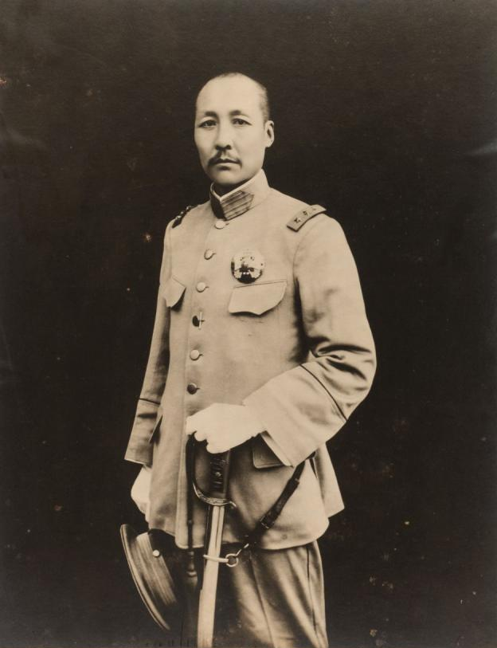

Geschichte im Spiegel der zeitgenössischen Berichterstattung — Täglich neu erzählt
Die historische Presseschau
Freitag, 17. September 1926
7 Artikel aus 12 Originalquellen · 5 Länder · 3 Sprachen
Mackenzie King vor Regierungsbildung — Schwere Niederlage für die Konservativen — Verfassungskrise entscheidet die Wahl
Eine historische Unterredung unter vier Augen — Stresemanns heimliche Abfahrt auf dem Genfer See — Die Rheinlandfrage im Zentrum der Bemühungen
Politische Häftlinge kehren in ihre Heimat zurück — Gnadenakte im Geiste des Berliner Vertrages
Feierlicher Akt im Palazzo Chigi — Wirtschaftliche Zusammenarbeit geplant — Die Bessarabienfrage bleibt ausgeklammert
Entscheidende Zusammenkunft im Comité des Forges — Belgische Quotenfrage vor der Klärung — Rekordzahlen der deutschen Roheisenerzeugung

Mehrere Treffer auf US-Kriegsschiffen — Verstärkungen aus Schanghai entsandt — Vorstoß der kantonesischen Südtruppen
Kritik an zentralistischer Reichsgesetzgebung — Dr. Mulert verlangt Wiederherstellung der Selbstverwaltung — 200 Städtevertreter in Stettin versammelt